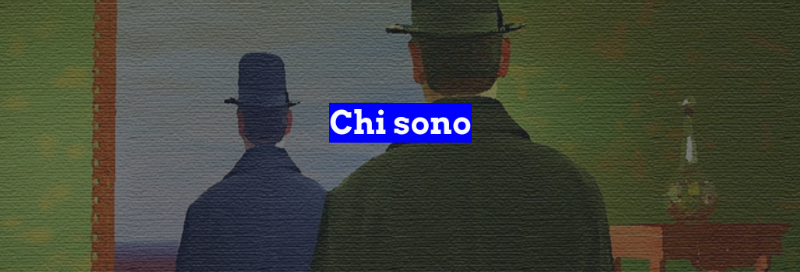
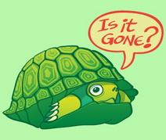
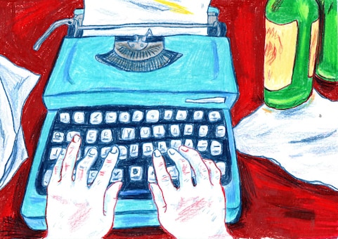

|
Io sono Gabriele Lupo, il creatore di questo sito, un ragazzo di 16 anni. Frequento la 3 Informatica dell'Istituto Internazionale Edoardo Agnelli. |
|
Sono una persona che all'inizio ha bisogno di un po' di
tempo per aprirsi e dopo riesco a essere socievole con tutti, conoscenti e non. Pero' ci sto mettendo sempre meno tempo. |
 |
I miei hobby sono:
|
 |